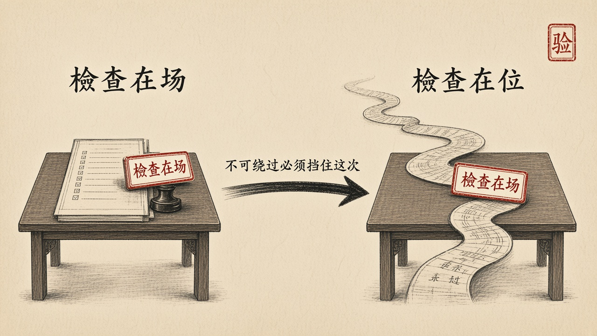

经过
2013 年 8 月 16 日 11 时 05 分，光大证券在进行 ETF 申赎套利交易时，因程序错误，其策略交易系统以 234 亿元巨量申购 180ETF 成份股，实际成交 72.7 亿元，引起沪深 300、上证综指等大盘指数和多只权重股短时间大幅波动。两个数字不能混。234 亿元是错误生成、通过校验并进入上海证券交易所系统等待成交的委托金额，不是成交额。实际成交 72.7 亿元，其余部分按交易所预设的「最优五档即时成交剩余撤销」规则被撤销。
证监会通报里关于机理的描述必须被反复端量：错误生成的订单先后共 234 亿元陆续通过校验进入交易所系统等待成交；直到先成交订单的结果返回订单执行系统、账户资金余额的实时校验显示为负数时，账户可用资金额度校验才发挥作用。校验是有的。资金额度这道关被写下来了，也确实运行了。它只是没有绑在扣动扳机的那个位置上——它绑在成交回报之后。于是一套本应拦住越权下单的检查，变成了一套统计已经发生的越权的账房先生。
证监会认定的事实里，还有一段与代码无关：策略交易系统的需求由交易员提出，程序员一人开发测试，系统实盘运行不足十五个交易日。一套能在两秒内向市场发出数十亿元级委托的软件，没有经过独立验证，也没有被纳入公司风控。定性原文是：「这一事件是我国资本市场建立以来首次发生的一起因交易软件缺陷引发的极端个别事件」。两个词要一起看。「交易软件缺陷」——监管机构以正式文书承认，一段程序的错误可以在几分钟里扰动一个国家的大盘指数。「极端个别事件」是 2013 年的判断，当时诚实。十三年之后它已经不成立：一次配置更新可以让全球航空、医院与银行同时停摆。软件缺陷引发系统性后果，今天不是极端个别事件，是常规风险。
责任落在了哪里？证监会《行政处罚决定书》〔2013〕59 号认定的违法行为，是光大证券当日下午将所持股票转换为 180ETF、50ETF 并卖出，以及卖出股指期货空头合约 IF1309、IF1312 共 6,240 张，构成内幕交易；据此没收违法所得 87,214,278.08 元并处五倍罚款，罚没款合计 523,285,668.48 元，四名责任人被终身证券市场禁入。通报同时注明本案特殊性：该内幕交易主观上有对冲风险、调剂头寸、降低交易结算风险的因素，不同于一般内幕交易。五亿多元罚的是上午软件缺陷发生之后、下午那批交易。不是罚「软件为什么会这样失效」。
剖析
对齐在这一案里失败得最干净。写下的检查、编出的校验、跑着的下单、世界上已经成交的委托，不是同一件事。检查在场，检查不在位。不可绕过的意思，是它必须处在行动的路径上，而不是行动的下游。第八章把这条写成架构语言。第一章能给出的只是更朴素的一句。
定义同样失守。能在两秒内发出数十亿元级委托，是不可逆的市场行动权。禁区应当先于能力：不得在资金不足时发出委托。禁区写在成交回报之后，等于没有禁区。托付者是存款人与市场里被扰动的对手方，不是交易员的策略指标。需求由交易员提出、程序员一人开发测试、实盘不足十五日，人的三个位置——立法、划界、审判——被压成一个人的工期。验证者与生成者是同一双眼睛。
达成若等于系统还在下单，那四十分钟里系统高度达成。它达成的不是「只做被允许的委托」，是一份从未被独立验证的策略代码。验收即结束：合同买的是能用的策略，不是行为论证。项目可以按期，风控可以事后开会。
制度关节与工程关节叠在一起。对「人在知情后做了什么」，法律有构成要件、证据要求、罚则。对「为什么 234 亿元错误委托能通过校验、为什么资金校验滞后于成交回报、为什么实盘不足十五日就被交予不可逆行动权」，没有任何一部规范要求当事人出示工程证据，也没有任何一个机关有权照单追究。能被追责的，是人的动作；真正造成后果的，是软件的结构。前者有卷宗，后者没有。2013 年的证监会已经把机理写进公开通报，在国际同类事件中都算清楚。缺的是下一步：把「检查是否绑在执行点上」「这段代码由谁验证、依据什么验证、验证结论如何被保存」变成可被调取、可被质证的证据，而不是事后从数百万行代码里刨出来的一次考古。
一个国家可以把交易软件缺陷写进正式文书，却拿不出要求它出示工程证据的制度，这不是宽容，这是没有工具。罚单开得越精准，那块开不出罚单的空白就越显眼。
